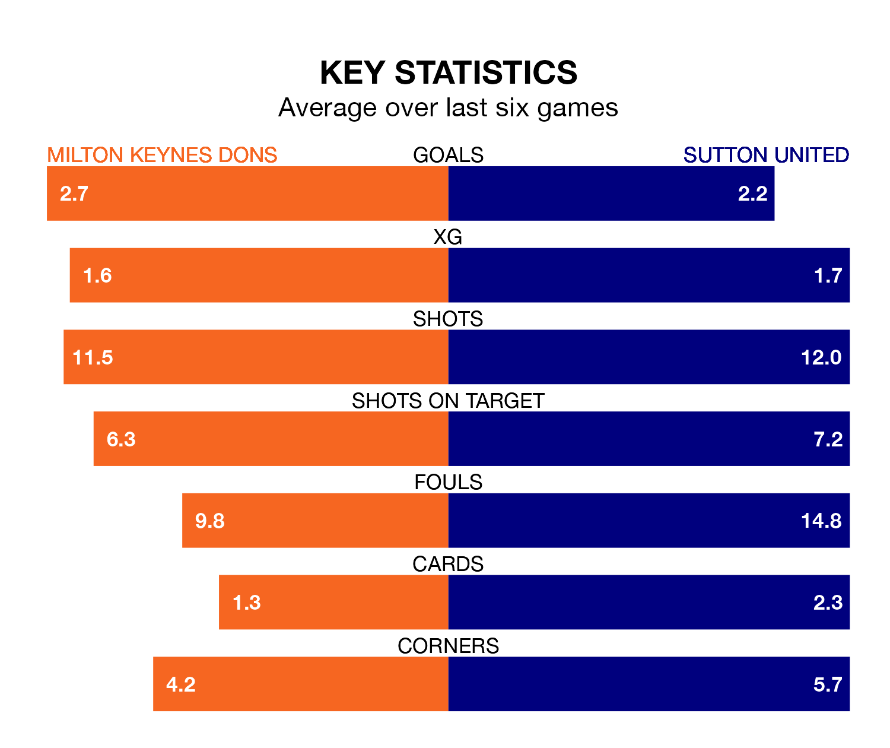

Relegation candidates Sutton United face a challenge away against high-flying Milton Keynes Dons at Stadium mk on Saturday.
Sutton United are 23rd in the EFL League Two table, and have picked up nine wins and 14 draws in their 45 games to date.
The Dons, meanwhile, are fourth in the standings with 77 points, having won 23 and drawn eight, and are 15 points behind table-toppers Stockport County.
With 79 goals in 45 games so far this season, Milton Keynes are scoring more than average in the league with 1.8 goals per game. And they are conceding fewer than average, letting in 64 goals at a rate of 1.4 per game.
Sutton, meanwhile, are below average scorers, with 1.2 goals per game, compared to a league average of 1.5. They have conceded 1.8 goals per game.
Dons are in mixed form in EFL League Two, with three wins and a draw from their last six games.
With three wins and two draws over that period, United's form is slightly better – they have taken 11 points from 18, compared to the Dons' 10.
Over the last two years, Milton Keynes and Sutton have played each other twice. Milton Keynes won one of them and they drew the other.
Their last meeting was on September 23, when they played out a 1-1 draw.
The hosts' Alex Gilbey is among the league's most creative players, racking up 10 assists in 45 appearances so far this season, and holding fourth spot in EFL League Two's assist charts.
For the Us, Josh Coley has set up the most goals, having laid on six assists in 38 games.
Milton Keynes's last match was on April 20, a 5-3 win against Harrogate Town, with Ellis Harrison, Emre Tezgel, Gilbey, Max Dean and Stephen Wourne getting the goals for the Dons.
Sutton drew 2-2 with Crawley Town last time out, also on April 20, with Charlie Lakin and Oliver Sanderson on the scoresheet.
Updated: 07:59 (UTC), 26/04/24